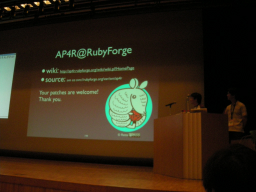
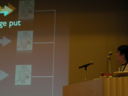

AP4R ： Ruby のための非同期メッセージングライブラリ （篠原 俊一 / 加藤 究）
- スピーカー
- 篠原 俊一 / 加藤 究 - フューチャーアーキテクト株式会社
- プロフィール
- 篠原 - Ruby が大好きなプログラマ。九州出身、芋焼酎が好き。でも、日本酒には板わさが最高だと思う。（id:ita-wasa）
加藤 - 去年から Ruby をはじめたプログラマ。楽しくなってきた。名前重要。名前負けしないようにがんばる。（id:kiwamu） - 講演者による資料
- http://rubyforge.org/docman/view.php/1765/1256/AP4R_on_RubyKaigi2007.pdf
http://rubyforge.org/docman/view.php/1765/1257/AP4R_on_RubyKaigi2007_EN.pdf （英語版）
Introduction
- 軽量メッセージングライブラリ
- Asynchronous Processing for Ruby
- ユーザーへのすばやい応答
- 負荷分散
- 去年9月リリース（プレスリリース）
軽量かつ堅牢
- ユーザーにすばやく応答したい
- 即時応答不要な処理はあとで
メッセージングによってあとで処理
- Logging
- Sending mail
- 重い処理
問題点
- メッセージが確実に配送されないと、メッセージの消失、重複などの問題
- 確実な配送保証は重要
堅牢さ
RtFA
- Pure Java
- 佐川急便の基幹システムのオープン化にも使用
- アプリサーバー100台！！
メッセージング重要
From RtFA to AP4R
- RtFA開発から8年たってる
- 変更追加機能に対して柔軟に！
- そんなときにRubyと出会う
- Rubyを使うと軽量なメッセージングが可能かも
デモ
- 買い物アプリ
- 注文と決済処理
- 決済処理が重いのでAP4Rを使って遅延処理
- mongrel clusterを利用
- abでストレス
リクエストをabで投げると処理中のメッセージの数が増えます。 しかし、クライアントにはレスポンスが即時に返ってきて、待たされることがありませんでした。
閑話休題
Java、FireFoxにはマスコットが
ワイルドかつキュート
AP4R ⇒ APAR ⇒ アルマジロ
まじろう
Working With Rails
- Rails関係の開発者/会社の情報
- 104カ国
- ブログへの投稿を集約
フィード取得の拡張性に問題。遅い、古い
WWR solution
- フィードキュー
- 非同期で取得
AP4Rで
- スケール出来る
- フィードの種類に柔軟に対応
社内プロジェクト
- 新しく作るアプリケーションはRuby on Railsで
- これまでの資産はJava
要求
- 速くてリッチなUI
- Java⇔Ruby間のデータ複製
そこでAP4R
- UIから重い処理を分離
- 非同期でRuby⇒Java
遅延可能な処理を非同期化
- サマリデータの作成
- メール送信など
ここでIRCからつっこみで場内爆笑。図中の「まじろう」の絵に対して、色くらい塗れよｗ
非同期にJavaを呼び出す
- 更新データを非同期で反映
IRCではもっぱら「まじろう」の話題で戸惑う講演者
まとめ
- ユーザーへの応答には不要な処理
- 別のトランザクションでよい
- 外部システムの呼び出し
これらを非同期に
技術的な話
メッセージPUT APIと処理の流れ
ap4e.async_to(....)
詳しくはRDOCを
http://ap4r.rubyforge.org/doc/
処理の流れを図解するも複数並べられた「まじろう」に対して「量産型まじろう」などIRCでさらに盛り上がる。すばらしいマスコット効果
AP4RがHTTPにPOST
保存してから送信
業務データベースの更新とメッセージングをアトミックに行いたい
Store and Forward
SAF便利
まとめ
- シンプルAPI
- 非同期処理を自動で処理
- SAF機能で確実な配送
質疑応答の時間は質疑なし、IRCで盛り上がる会場
11:58 (ujihisa) まじろう良かった
11:58 (_tommy_) まじろうがかわいく見えてきた
11:58 (ymitsui) Future Plan: まじろうを塗る
11:58 (miyamuko) まじろうメソッド
11:58 (kssddy) SAFにマスコットはいないんですか？
11:58 (CyrossM__) まじろうに始まりまじろうに終わる
11:58 (unak) マスコット駆動開発
11:58 *po0ls quit ("Quitting!")
11:58 (CyrossM__) MDD
11:58 (ujihisa) MDD
11:58 (nov) MDD
11:58 (cuzic) MDD
11:58 (znz_r) 今度はメッセージも持たせておいて。
11:58 (akr) 質問: まじろうの嫌いなものはなんですか
11:59 (walf443) 「ふつう
11:59 (unak) 好きなものを聞けよ
11:59 (walf443) 』の質問
11:59 (ujihisa) 質問: まじろうを描いた方は?
11:59 (_tommy_) なんでも食べそう
11:59 (ujihisa) らくたさん
11:59 (kssddy) らったさん
11:59 (kssddy) Ratta
11:59 (ntakai) バックエンドがRailsの理由は?
（ロガー：よう）


Keyword(s):
References:[RubyKaigi2007速報ログ]